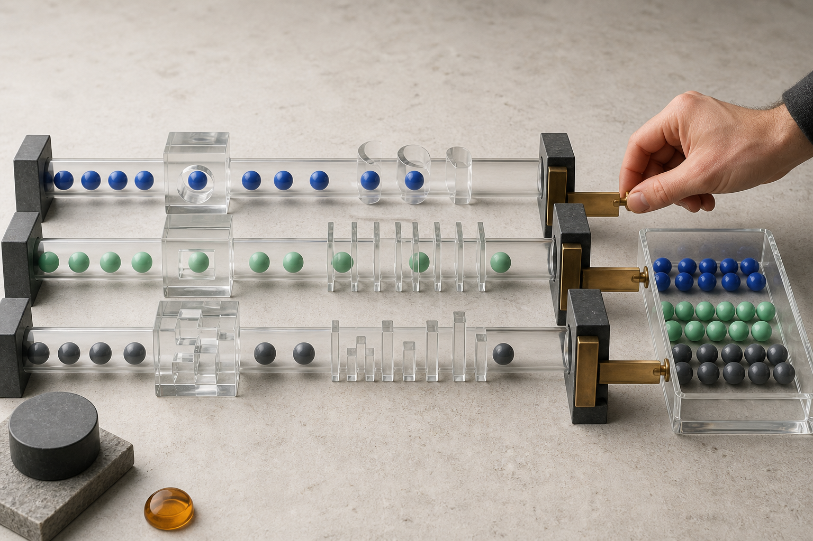

Model update · Cost & deployment
Gemini 3.7 Flash는 왜 ‘일꾼 모델’인가
구글은 새 Flash를 코딩과 에이전트를 위한 주력 모델로 밀고 있다. 숫자 하나보다 중요한 것은 100만 토큰 문맥, 도구 호출, 사고 수준, 그리고 연말 뒤 두 배가 되는 가격이다.
구글이 8월 13일 Gemini 3.7 Flash를 정식 출시했다. 공식 API 출시 노트에서 구글은 이 모델을 코딩과 에이전트를 위한 가장 지능적인 ‘워크호스’라고 부르며, 소프트웨어 엔지니어링과 웹 개발, 에이전트 작업 흐름이 크게 개선됐다고 주장한다.
‘워크호스’는 가장 어려운 문제에 한 번 도전하는 모델보다, 매일 많은 요청을 비용 안에서 끝내는 모델이라는 뜻에 가깝다. 고객 문의를 분류하고, 저장소의 이슈를 읽고, 도구를 호출해 결과를 정리하는 일은 화려한 데모보다 실패율과 반복 비용이 중요하다.
그래서 이번 업데이트를 볼 때는 공개 벤치마크의 1위 항목보다 세 가지를 먼저 봐야 한다. 어떤 입력과 도구를 실제로 지원하는지, 추론 강도를 어떻게 조절하는지, 그리고 현재의 할인 가격이 끝난 뒤에도 같은 업무가 경제적인지다.
모델 ID 하나에 묶인 실제 작업 범위
‘더 빠른 챗봇’보다 ‘실패 루프가 적은 에이전트’를 노렸다
공식 모델 ID는 gemini-3.7-flash다. 입력은 텍스트뿐 아니라 이미지, 영상, 오디오, PDF를 받는다. 1,048,576개의 입력 토큰과 65,536개의 출력 토큰을 지원하므로 긴 저장소 문서나 여러 파일을 한 작업에 묶는 사용 사례를 겨냥했다.
도구 측면에서는 함수 호출, Google 검색 근거, 코드 실행, 파일 검색, URL 문맥, 구조화 출력이 지원된다. Computer Use는 프리뷰로 표시돼 있다. 반대로 이미지 생성과 오디오 생성, Live API는 이 모델의 지원 목록에 없다. ‘Gemini’라는 이름만 보고 모든 멀티모달 생성 기능을 한 모델에 기대하면 안 된다.
구글은 실제 소프트웨어 엔지니어링과 에이전트 벤치마크에서 품질이 높아졌고, 문제 해결 과정의 실패 루프가 줄었다고 설명한다. 디자인 목업에서 웹 코드를 만들고 결과를 목업과 대조하는 능력도 강조한다. 그러나 이는 우선 공급자의 주장이고, 자신의 저장소에서 같은 개선이 나오는지는 별도 시험이 필요하다.
독립적인 사용 사례는 가능성과 한계를 함께 보여준다. Tom’s Guide의 실사용 테스트에서는 Gemini Spark가 Gmail과 Drive를 찾아 중요한 항목을 모으고 원문 링크를 붙였다. 동시에 이름 없는 일부 문서와 정리해야 할 이메일을 놓쳤다.
이 결과가 말해 주는 것은 “완벽하게 알아서 한다”가 아니다. 검색 범위, 우선순위, 금지 행동, 결과 형식을 긴 프롬프트로 구체화했을 때 유용했고, 사용자가 원문 링크로 결과를 확인할 수 있었기 때문에 업무에 가까워졌다는 뜻이다.
사고 수준 세 단계는 품질 버튼이 아니라 비용 라우터다
Gemini 3.7 Flash는 low, medium, high 세 사고 수준을 지원하고 medium을 기본값으로 쓴다. 이전의 숫자형 thinking_budget을 계속 넣는 대신 문자열 thinking_level로 바꾸는 것이 권장된다. minimal 수준은 지원하지 않는다.
모든 요청에 High를 쓰지 않는 세 갈래 배정
분류, 형식 변환, 짧은 검색 요약처럼 응답 시간이 중요한 반복 작업
도구를 몇 차례 쓰는 조사, 일반 코드 수정, 여러 조건을 지키는 기본 에이전트 작업
어려운 디버깅, 복잡한 계획, 실패 비용이 큰 추론을 소수 요청에 제한해 사용
에이전트 서비스라면 이 구분을 사용자에게 직접 노출하지 않아도 된다. 처음에는 low로 분류하고, 복잡한 코드 변경이나 도구 실패가 감지되면 medium으로 올리고, 사람이 중요 표시를 한 요청만 high로 보내는 라우팅을 만들 수 있다.
주의할 점은 출력 토큰 가격에 생각 토큰도 포함된다는 사실이다. high가 더 좋은 답을 줄 수 있어도, 긴 추론이 반복되면 응답 지연과 비용이 함께 늘어난다. 모델 교체 전에는 성공률만 아니라 요청당 전체 출력 토큰을 기록해야 한다.

지금의 가격은 매력적이지만 2027년 1월에 달라진다
공식 Gemini API 가격표에서 3.7 Flash의 2026년 12월 31일까지 표준 가격은 입력 100만 토큰당 0.75달러, 출력 100만 토큰당 3.75달러다. Batch와 Flex는 각각 0.375달러와 1.875달러다.
2027년 1월 1일부터 표준 가격은 입력 1.50달러, 출력 7.50달러로 두 배가 된다. 따라서 연말까지의 사용량만 보고 장기 예산을 확정하면 안 된다. 제품 출시 전후에 가격표가 바뀌는 날짜를 비용 계산에 넣어야 한다.
현재 Gemini 3.5 Flash의 표준 가격은 입력 1.50달러, 출력 9달러다. 3.7 Flash의 한시 가격은 이에 비해 입력이 50% 낮고 출력이 약 58.3% 낮다. 할인 종료 뒤에는 입력 가격이 같아지고 출력은 약 16.7% 낮다.
월 1억 입력 + 2천만 출력 토큰이라면
계산: 입력 100M×단가 + 출력 20M×단가. 캐시, 저장, 검색·지도 등 별도 도구 비용과 지역 세금은 제외했다. 출력에는 생각 토큰이 포함될 수 있다.
배치 처리가 가능한 뉴스 분류, 야간 코드 검사, 대량 문서 태깅은 Batch나 Flex로 비용을 낮출 여지가 있다. 반면 사용자가 화면에서 기다리는 대화와 즉시 실행되는 에이전트는 표준 또는 우선순위 서비스의 지연 시간까지 함께 비교해야 한다.
캐시도 중요하다. 매 요청마다 같은 규정집이나 저장소 설명을 100만 토큰 가까이 다시 보내는 서비스라면, 모델 단가보다 캐시 적중률이 비용을 더 크게 움직일 수 있다. 3.7 Flash의 현재 표준 캐시 입력 단가는 100만 토큰당 0.075달러지만 저장 시간 비용은 따로 계산된다.
긴 문맥과 도구 호출은 따로 시험해야 한다
100만 토큰 문맥은 자료를 많이 넣을 수 있다는 용량 표시다. 문서가 길어질수록 중요한 규칙이 중간에 묻히거나, 서로 다른 버전의 정책을 동시에 읽고 오래된 내용을 고를 수 있다. 실제 서비스에서는 최신 규칙을 앞뒤에 반복하는 방식보다 문서를 버전별로 나누고 필요한 부분을 먼저 검색하는 구조가 더 안정적일 수 있다.
긴 문맥 시험은 짧은 질문을 크게 복제하는 방식으로 만들면 안 된다. 계약서 여러 개에서 서로 충돌하는 조항을 찾기, 저장소 문서와 실제 코드가 다른 부분 찾기, 긴 회의 기록에서 결정과 보류를 구분하기처럼 자료의 위치와 관계를 이해해야 하는 과제를 써야 한다.
도구 호출 평가는 답변 문장 평가와 분리한다. 올바른 함수를 골랐는지, 필수 인수를 빠뜨리지 않았는지, 읽기 도구로 충분한데 쓰기 도구를 선택하지 않았는지, 실패 뒤 같은 요청을 무한 반복하지 않았는지를 로그에서 센다. 최종 문장이 자연스러워도 잘못된 계정에 행동했다면 실패다.
검색 근거 기능을 쓸 때는 링크 수보다 인용이 실제 문장을 뒷받침하는지 확인해야 한다. 검색 결과의 요약문을 원문처럼 취급하거나, 날짜가 다른 두 발표를 하나로 합치는 오류는 모델이 빨라져도 사라지지 않는다. 뉴스와 가격 정보에는 원문 날짜와 확인 시각을 결과에 함께 저장하는 편이 좋다.
코딩 업무는 공개 벤치마크와 별도로 팀의 실제 회귀 시험을 준비해야 한다. 작은 버그 수정, 여러 파일 리팩터링, 테스트 추가, 디자인 목업 재현, 실패한 배포 로그 분석처럼 자주 들어오는 일을 골고루 넣고 기존 모델과 같은 도구·시간 제한을 사용한다.
완료 판정도 컴파일 성공 하나로 끝내면 안 된다. 기존 테스트가 통과하는지, 새 테스트가 결함을 실제로 잡는지, 불필요한 파일을 바꾸지 않았는지, 사람이 되돌린 코드가 얼마나 되는지를 확인한다. 에이전트가 여러 차례 재시도한 경우에는 최종 성공뿐 아니라 그 과정의 토큰과 실행 시간도 비용에 포함한다.
출력 비용이 입력보다 비싸기 때문에 장황한 내부 추론과 반복 설명은 운영비를 빠르게 키운다. 구조화 출력으로 필요한 필드만 받거나, 요약 단계와 행동 단계를 나누고, 단순 분류에 low를 쓰면 품질을 해치지 않으면서 출력량을 줄일 가능성이 있다.
캐시는 큰 공통 문맥이 반복될 때 유리하지만 요청마다 내용이 거의 달라지면 효과가 작다. 캐시 생성과 저장 시간에도 비용이 있으므로 적중률이 낮은 업무까지 무조건 캐시하면 오히려 복잡성만 늘 수 있다. 문서 묶음별 적중률과 절감액을 실제 청구 데이터로 확인해야 한다.
전환은 처음부터 모든 사용자에게 열기보다 내부 요청, 5%, 20%, 50%처럼 범위를 넓히는 편이 안전하다. 단계마다 오류율과 사람 수정 시간이 기준을 넘으면 기존 모델로 되돌릴 수 있어야 한다. 모델 ID와 프롬프트 버전, 도구 스키마를 로그에 함께 남겨야 원인을 구분할 수 있다.
한국어 품질은 영어 코딩 평가만으로 알기 어렵다. 높임말, 조사 생략, 날짜와 통화 표기, 긴 복합 명사의 이해, 한국 사이트 검색 결과의 출처 구분을 따로 시험해야 한다. 고객 응대라면 같은 뜻을 다른 말투로 표현했을 때 정책 판단이 흔들리지 않는지도 본다.
민감한 자료를 다루는 조직은 모델 성능과 별개로 데이터 보존, 지역, 관리자 로그, 접근 통제를 확인해야 한다. API에 보낼 수 있는 자료와 보낼 수 없는 자료를 구분하고, 개인 정보는 가능한 한 전처리 단계에서 제거한다. 긴 문맥이 지원된다는 이유로 저장소나 메일함 전체를 한 번에 전달해서는 안 된다.
마지막으로 모델 별칭보다 고정 모델 ID를 사용하는 편이 재현에 유리하다. 새 버전이 빠르게 나오는 시기에는 같은 프롬프트가 어느 날부터 다른 결과를 낼 수 있다. 자동 업데이트가 필요한 서비스라도 먼저 그림자 평가를 통과한 버전만 기본 경로로 승격하는 절차가 필요하다.
교체는 모델 이름 한 줄로 끝나지 않는다
3.5나 이전 프리뷰에서 넘어올 때는 지원 중단된 샘플링 옵션과 대화 형식을 확인해야 한다. 구글 가이드는 temperature, top_p, top_k, 미리 채운 모델 턴을 제거하고, 사고 예산을 사고 수준으로 바꾸라고 안내한다.
함수 호출도 다시 봐야 한다. 도구 호출 이름과 인수를 맞게 생성하는지, 한 도구가 실패했을 때 같은 행동을 반복하는지, 중간 결과가 다음 호출에서 빠지지 않는지를 실제 로그로 확인해야 한다. 구조화 출력의 스키마가 같아도 내용의 의미가 맞는지는 별개다.
프로덕션 전환은 다섯 묶음으로 나눠 본다
가장 현실적인 시험은 지난달의 실제 요청 100~500개를 개인정보를 제거한 뒤 두 모델에 동시에 넣는 것이다. 정답률만 세지 말고 작업 완료율, 잘못된 도구 호출, 사람이 고치는 시간, 성공한 작업 하나당 비용을 함께 비교한다.
커뮤니티 평가는 아직 엇갈린다. 일부 사용자는 속도와 코딩 개선을 높이 평가하지만, 다른 사용자의 소규모 경쟁 프로그래밍 시험에서는 이전 Pro 모델이 더 나았다는 보고도 있다. 이런 글은 실패 사례를 찾는 데 유용하지만, 통제된 독립 벤치마크나 자신의 업무 평가를 대신하지는 못한다.
과장해서 읽지 말 것: 100만 토큰을 넣을 수 있다는 말은 100만 토큰 전체를 똑같이 정확하게 기억한다는 뜻이 아니다. 지원 기능의 존재도 모든 계정·지역·제품에서 같은 품질과 지연 시간을 보장하지 않는다.
한국 개발자와 팀이 지금 할 일
이미 3.6 Flash를 쓰는 팀이라면 가격만으로 급히 바꿀 이유는 적다. 현재 두 모델의 한시 가격이 같기 때문이다. 대신 도구 호출 실패와 코드 수정 재시도 횟수가 줄어드는지부터 그림자 트래픽으로 비교하는 편이 좋다.
3.5 Flash를 대량으로 쓰는 팀은 비용 절감 가능성이 크다. 하지만 2027년 단가로도 사업 모델이 성립하는지 먼저 계산해야 한다. 연말 할인에 맞춰 제품 가격을 정했다가 새해에 추론 비용이 두 배가 되는 구조는 피해야 한다.
AI 뉴스 수집 같은 업무에서는 low를 후보 분류에, medium을 공식 문서와 언론 교차 확인에, high를 서로 모순되는 주장이나 코드 분석에 제한적으로 배정할 수 있다. 그리고 게시·발송은 어떤 사고 수준에서도 사람 승인 뒤에 둔다.
직접 체험하려는 사람은 Google AI Studio에서 같은 프롬프트를 여러 사고 수준으로 실행해 보는 것이 가장 단순하다. 개발자는 API에서 모델 ID를 고정하고 사용량 메타데이터를 저장해야 나중에 모델 별칭이 바뀌어도 결과와 비용을 추적할 수 있다.
짧은 결론: Gemini 3.7 Flash의 뉴스 가치는 ‘Flash가 Pro를 이겼다’는 한 문장에 있지 않다. 긴 문맥과 도구를 쓰는 반복 업무를 더 낮은 현재 비용으로 운영하되, 사고 수준과 승인 단계를 서비스가 직접 설계하게 만든 점이 핵심이다. 좋은 일꾼인지는 벤치마크 표가 아니라 완료 작업당 비용과 사람의 수정 시간으로 판단해야 한다.